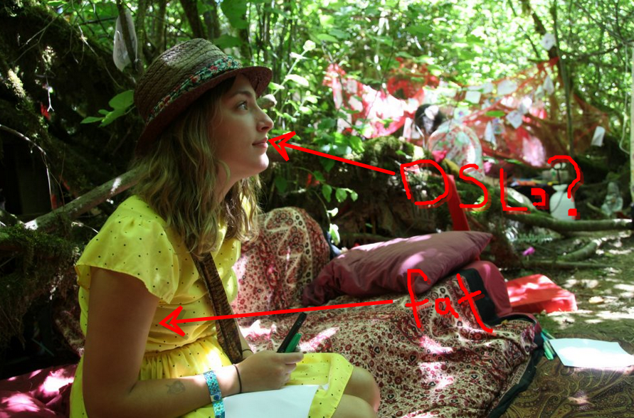
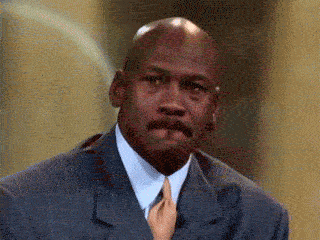

Daryush "Roosh" Valizadeh created ROK in October 2012. You can visit his blog at RooshV.com or follow him on Twitter and Facebook.


We were recently mentioned in The Gateway, a student newspaper for the University of Alberta. The reporter, Paige Gorsak, confused us for men’s rights activists…
Last week, the blog Return of Kings posted a list of the nine ugliest feminists. But even more unfortunate than the list itself is that the blog is not alone in its view. Columns and websites that are misogynistic and openly anti-feminist plague the internet, where screen names protect identities and allow for so-called free speech. Even Edmonton has its own chapter of Men’s Rights Activists.
It’s important to define what men’s rights activism is. Coming from the local group, an MRA is a man or woman concerned with issues like “male circumcision, men’s reproductive rights, domestic violence awareness, antifeminism, misandry, chivalry and false allegations.” These vague descriptors are explained in further detail on the website site [sic], but the basis of the legitimate causes are explained and argued for in the framework of anti-feminism.
The other week I was called a PUAMRA. I predict that in one month I will be labeled a merman.
Here are two pictures of Paige Gorsak so you can visualize how her face must have looked when she was destroyed in a comment I’m about to share:

Here’s the comment:
Thank you, Paige, for your opinion piece about Men’s Rights Activism. In particular, thank you for using fallacious arguments to suggest that because you don’t care for the mission and the tactics of some MRA’s, MRA’s are a farce. Thank you for demonstrating that hasty generalization, straw man, false equivalence and other lapses of logic are not limited to men alone. Thank you for demeaning what many men perceive to be an inherent violation of bodily autonomy and integrity by dismissively saying that it’s not as bad as the “very real issue” of female circumcision. Thank you for grudgingly acknowledging that some MRA’s aren’t a complete waste of time and, as self-appointed Spokeswoman for Feminism, deigning to give me permission to advocate for those things that you believe should be important to me as a man. Thank you for making it clear that it is ok for a member of one gender to tell another gender what to think. Thank you for misrepresenting feminism as a unequivocally, schism-free homogenous quest for good, unlike fractious and controversial men’s rights, and that it is acceptable to define a civil rights movement by an outsider’s perception of its basest members. Most importantly, thank you for demonstrating the self-righteous ignorance and arrogance that drives much of the anti-feminist sentiment that you observed in many of the groups you wrote about. I also would like to pre-emptively thank you for misunderstanding this comment as an attack on women and feminism in general, rather than a criticism of the vapid and condescending nonsense you somehow had the temerity to publish.

What I want to ask Paige is why? As a young woman with the potential to be pretty, why are you putting one ounce of your energy into gender issues instead of focusing on your appearance (i.e., exercising and exerting more willpower over your diet)? If you lived in Eastern Europe, you’d be thin and pleasing. You wouldn’t even know what feminism was. But thanks to your poisonous environment, you’re turning into a fat, vapid idiot who is slated to be brainwashed further into hating the only gender who can give you any type of happiness in life: men. It’s not too late Paige. Stop reading feminist blogs and hit the gym instead. Thank me later.
P.S. Would you bang?